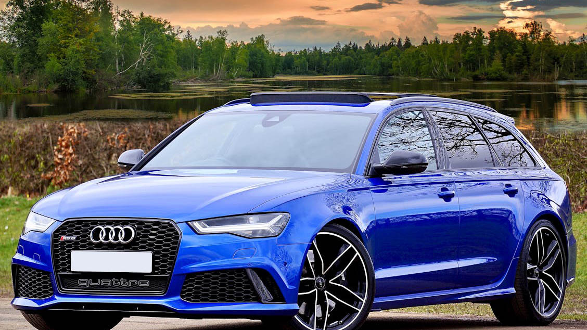

SRT Demon
- Привід: Задній
- Гальма: Великі вентильовані диски Brembo
- Підвіска: Адаптивна з режимами для треку, спорту та міста
- Технології: Системи Launch Control, Line Lock, TransBrake (у Demon)
- Трансмісія: 8-ступінчаста автоматична або 6-ступінчаста механічна коробка передач
- 1025 к.с. на біоетанолі E85
- 0–100 км/год за 1,66 секунди
Послухайте звук двигуна:
BMW M5 F90 Competition.
Двигун: 4,4-літровий V8 з подвійним турбонаддувом (S63)

Потужність: 560–605 к.с.
Кузов: Avant. Привід: постійний повний (quattro)
Трансмісія: 8-ступенева автоматична Tiptronic
Підвіска: спортивна RS plus з системою Dynamic Ride Control (DRC)
Гальма: вентильовані дискові, опційно — керамічні
Максимальна швидкість: 250 км/год (обмежена), з пакетом RS Dynamic plus — до 305 км/го
AUDI RS6.
Golf VII GTI.
- Оснащувався 2,0-літровим турбованим двигуном потужністю 220 к.с., а з пакетом Performance — 230 к.с. Розгін до 100 км/год за 6,5 секунди Привід: Передній
- Трансмісія:
- 6-ступенева механічна коробка
- 6-ступенева (а згодом 7-ступенева) DSG (роботизована коробка перед

CLS AMG S.
- Двигун: 5,5-літровий V8 бітурбо AMG (M157)
- Потужність: 585 к.с. (430 кВт) при 5 500 об/хв
- Крутний момент: 800 Н·м при 1 750–5 000 об/хв
- Трансмісія: 7-ступенева автоматична AMG SPEEDSHIFT MCT
- Привід: повний
- Розгін 0–100 км/год: 3,6 секунди
- Максимальна швидкість: обмежена електронікою до 250 км/год
PORSHE 911GT3
- Двигун: атмосферний 6-циліндровий опозитний (боксер)
- Об’єм: від 3,6 до 4,0 літрів залежно від покоління
- Потужність: від 360 до 510 к.с.
- Привід: задні й
- Трансмісія: 6-ступенева механічна або 7-ступенева роботизована PDK
- Максимальні оберти двигуна: до 9 000 об/хв
M5 E60.
- Двигун: 5.0-літровий V10 S85B50, потужністю 507 к.с. при 7750 об/хв і крутним моментом 520 Нм при 6100 об/хв
- Трансмісія: 7-ступенева роботизована КПП SMG III; для ринку США була доступна 6-ступенева механічна коробка переда
- Привід: Задній.
- Розгін 0–100 км/год: 4,7 секунди.
- Максимальна швидкість: 250 км/год (електронно обмежена); з опційним пакетом — до 305 км/год .
- Гальма: Вентильовані дискові з ABS
- Розміри: Довжина — 4855 мм, ширина — 1846 мм, висота — 1469 мм, колісна база — 2889 мм
M5 F10.
- Двигун: 4,4-літровий V8 з подвійним турбонаддувом (S63B44TU)
- Потужність: 560 к.с. при 6000–7000 об/хв
- Крутний момент: 680 Н·м при 1500–5750 об/хв
- Трансмісія: 7-ступенева роботизована коробка передач з подвійним зчепленням (DCT); 6-ступенева механічна коробка передач доступна для ринку США
- Привід: Задній
- Розгін 0–100 км/год: 4,4 секунди
- Максимальна швидкість: 250 км/год (305 км/год з пакетом M Driver’s Package) Витрата пального (змішаний цикл): 9,9 л/100 км